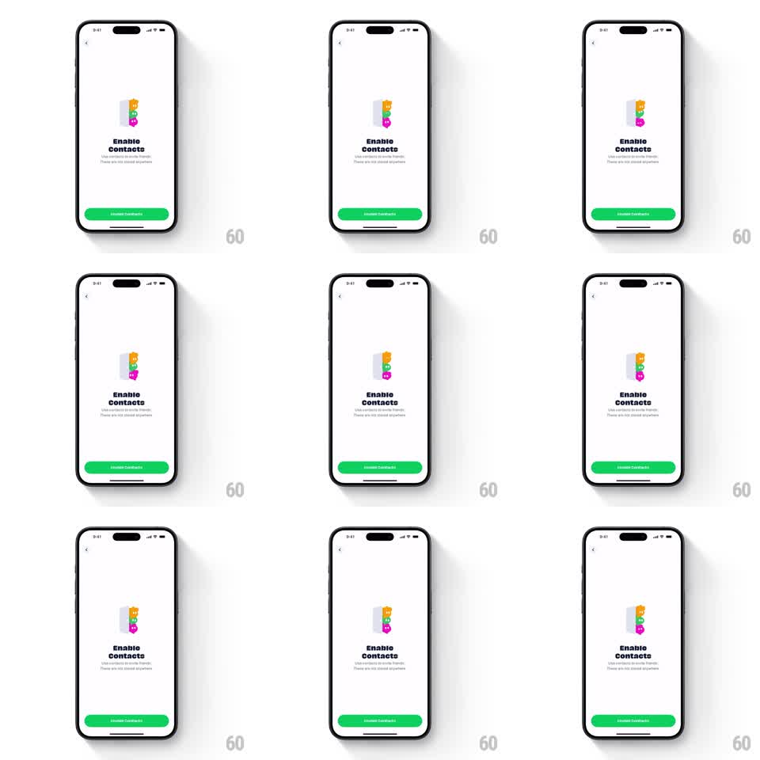

Media
Frame-by-frame

Rebuild this animation 1:1: Abode's "Enable Contacts" onboarding screen - a looping idle animation where staggered colorful contact avatars (yellow, green, pink squares with faces) bob up out of a gray slot, one after another, above the bold "Enable Contacts" headline and a green Enable Contacts button.

Rebuild this animation 1:1: Abode's "Enable Contacts" onboarding screen - a looping idle animation where staggered colorful contact avatars (yellow, green, pink squares with faces) bob up out of a gray slot, one after another, above the bold "Enable Contacts" headline and a green Enable Contacts button. ## Integration Integration: stack-agnostic spec - springs given as stiffness/damping, timed motions as duration + curve; map every value to your framework and animation library of choice. ## Scene White onboarding screen with a back chevron. Center: a small gray rounded slot with three chunky square avatars (yellow, green, pink, each with a simple face) rising from it in a staggered stack. Below: "Enable Contacts" headline, subcopy about finding friends, and a green full-width "Enable Contacts" button. ## Motion spec Pattern: looping staggered avatar bob from a slot. - Loop (about 2.4s): each avatar rises out of the slot in turn - translateY from inside the slot to fully popped (40pt travel, spring ~300/18), holds 400ms, then sinks back as the next rises; the three avatars are phase-offset by 300ms. - Each pop has a tiny rotation settle (+/-4deg) so the squares feel physical. - The slot shadow compresses as an avatar lands back in (scaleX 1 -> 0.9, 150ms). - Headline, subcopy, and button fade up once on screen entry (250ms, 80ms stagger). ## Calibration - Only one avatar is fully popped at a time; the others peek or rest. - The loop is seamless - no visible restart. ## Reduced motion The avatar stack shows statically, fully popped; no loop. ## Don't miss - The avatars are squares with rounded corners and faces, not circular profile photos. - The pop order is fixed: yellow first, then green, then pink.